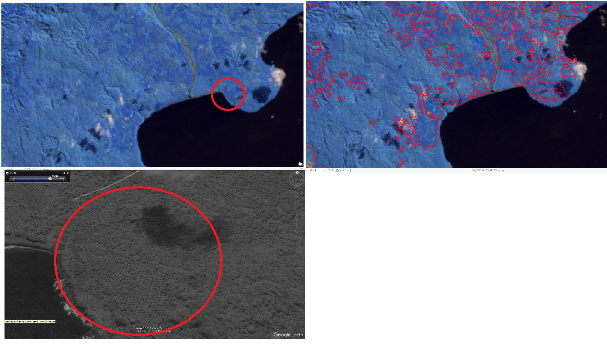
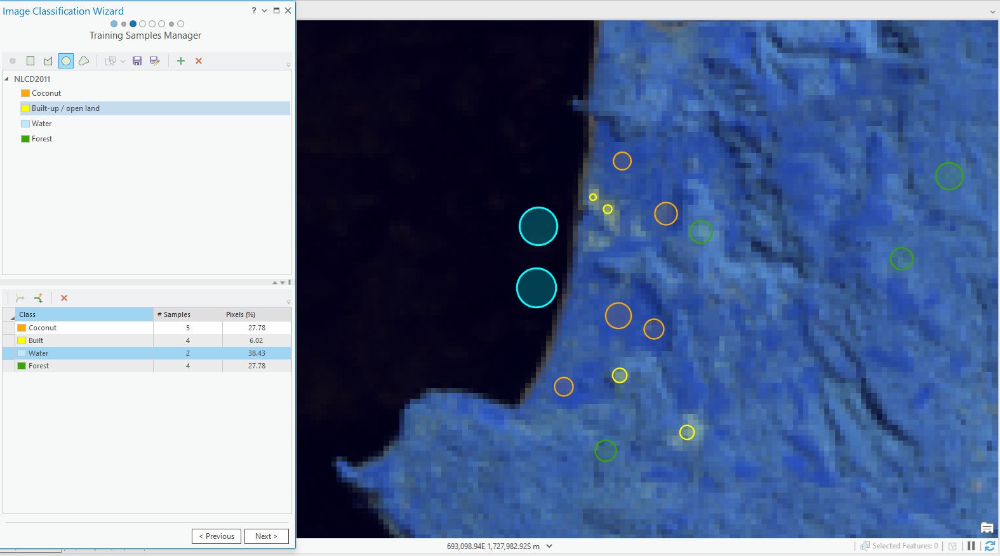
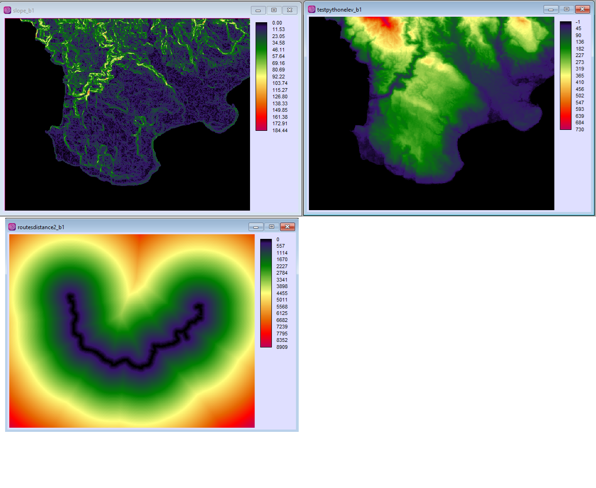
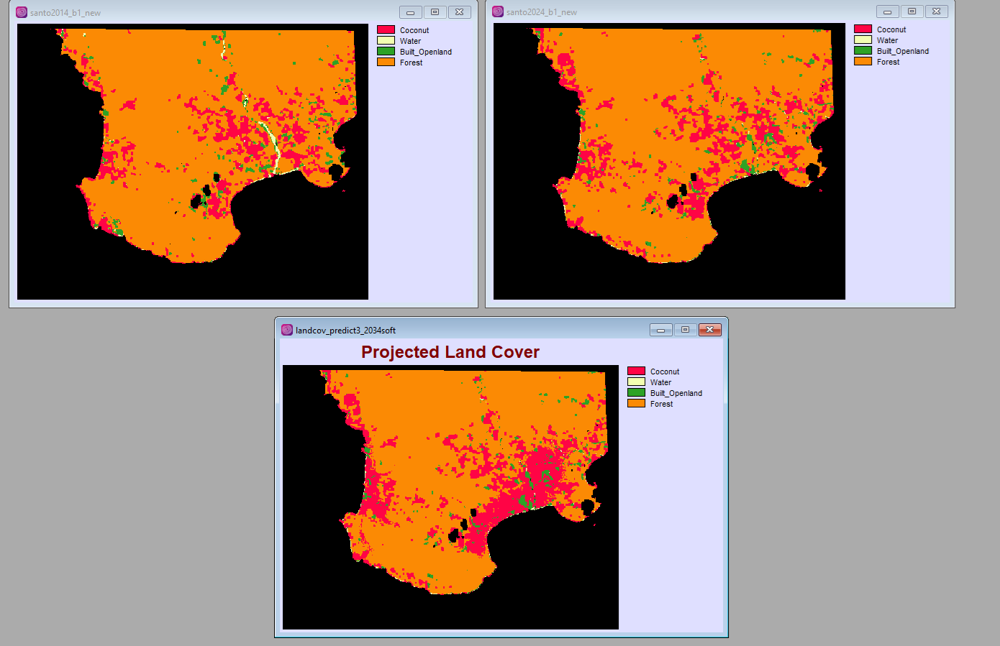

This self-directed project was developed to showcase my interest in REDD+ initiatives and my growing expertise in geospatial analysis. With an academic background in the political geography of the environment and hands-on experience, I am eager to deepen my skills in GIS technologies. The map was created using ArcGIS Pro, ArcPy, TerrSet, QGIS, and Adobe Illustrator, combining spatial data analysis with visual storytelling to support environmental research and action.
In the context of Vanuatu’s national REDD+ strategy, this self-directed research aims to use Geographic Information Systems (GIS) to model a potential land cover transition — more specifically, the transition from forest to coconut plantations. The decision to analyse this specific transition follows an understanding of the underlying causes of deforestation. According to Geist and Lambin, “working behind the direct drivers of forest loss or degradation are underlying causes, which are often harder to identify and quantify, but which must be addressed in any effort to reduce pressures on forests.” (Geist and Lambin, 2002, in Government of Vanuatu, 2022).
Focusing on the economic and political aspects of these underlying drivers led to the choice of modelling the forest-to-coconut-plantation transition. Based on interview data from the Vanuatu National REDD+ Strategy, one of the perceived drivers on Santo Island is governmental promotion of copra production. Coconut plantations represent a key income source. According to specialists working on REDD+, “As typical in many Ni-Vanuatu communities, copra farming had been a main income source, but is highly vulnerable to price fluctuations and involves significant investment of human labor.” (Carodenuto et al., 2022).
In the same paper, the authors explain that copra production — when not integrated into agroforestry systems — falls under the business-as-usual scenario. Market forces can influence deforestation: “The broad challenges to REDD+ reflect the situation in Vanuatu in that global markets have driven deforestation, and global markets must also play an important role in reducing deforestation.” (Carodenuto et al., 2022). From this perspective, it becomes relevant to model the potential transition from forest to coconut plantations in a business-as-usual scenario.
The study area was selected through spatial observation. Various data layers were used to identify the zone of interest. The overlap of spatial data — such as recent deforestation (Hansen et al., 2013), coconut canopy (Descals et al., 2023), and Google Earth imagery — led to the selection of the southwestern part of Espiritu Santo Island.
The first step was to collect Landsat data for the selected area from earthexplorer.usgs.gov. Two datasets were chosen from the dry season, ten years apart: 2014 and 2024. The selected dataset was Landsat 8–9 OLI/TIRS C2 L2.
After processing the data in ArcGIS Pro, a 6-5-4 band combination was used for vegetation analysis. Combined with the coconut canopy raster data and visual observations from Google Earth Pro, this made it possible to identify coconut plantations for the next step: supervised classification.
Once clouds were removed, the Classification Wizard tool was used to run a supervised pixel-based classification. Four land cover classes were defined: Built-up/Open Land, Water, Coconut Plantation, and Forest. Approximately 80–100 training samples per class were used for the classification.
The next step was to export the data to TerrSet to process land cover transitions using the Land Change Modeler. Input layers included land cover maps from 2014 and 2024, elevation, slope, and road data. However, as noted in the limitations section, only elevation, slope and roads were used as variables for the transition modeling. The result is a projection of land cover in 2034 based on the observed changes between 2014 and 2024.
 
This section is a personal reflection on areas for improvement in future research. The limitations mainly concern the data and technical challenges. The Landsat data was constrained by cloud coverage, narrowing the selection options despite the availability of processing tools. Imagery with minimal cloud cover was chosen, and treatments were applied to reduce their impact.
For a more accurate model, it is recommended to calibrate using land cover data from three different time periods. For example: “We used available data sources from the time interval 1983–2011. We included data from t1–t2 (i.e., 1983–2000) to calibrate the model and data from t2–t3 (i.e., 2000–2011) for validation.” (Di Lallo et al., 2017). Similarly, Freund et al. (2024) used two historical datasets to calibrate a deforestation risk projection model.
Through reading various studies on modelling deforestation risk in the context of REDD+, the importance of the variables used became clear. This project focuses on deforestation linked to coconut plantation expansion, and similar types of variables are relevant. However, only slope, elevation and distance from roads were used. Technical issues arose when trying to include variables such as distance from buildings or other disturbances. It would also be valuable to add further variables such as soil quality or socioeconomic data. Field data and a better understanding of the local human geography are also important.
I acknowledge the limitations of this model and the possible improvements needed to develop a more robust analysis.
Carodenuto, S., Schwarz, B., Nelson, A., Bome, G., & Andre, G. (2022). Practice-based knowledge for REDD+ in Vanuatu. Society & Natural Resources, 35(2), 220–241. https://doi.org/10.1080/08941920.2021.2011996.
Descals, A., Wich, S., Szantoi, Z., et al. (2023). High-resolution global map of closed-canopy coconut palm. Earth System Science Data, 15, 3991–4010. https://doi.org/10.5194/essd-15-3991-2023.
Di Lallo, G., Mundhenk, P., Zamora López, S. E., et al. (2017). REDD+: Quick assessment of deforestation risk based on available data. Forests, 8(1), 29. https://doi.org/10.3390/f8010029.
Freund, J., Pauly, M., Gochberg, W., et al. (2024). A novel deforestation risk and baseline allocation model for the next generation of nested REDD+ projects. Scientific Reports, 14, 15138. https://doi.org/10.1038/s41598-024-65141-x.
Government of Vanuatu. (2022). National REDD+ strategy. UN-REDD Programme. https://static1.squarespace.com/static/58d6cc1e17bffcffb801edde/t/62d9c78ffd068b11aee550ba/1658439573552/Vanuatu-National-REDD-Strategy_Final-Draft.pdf.